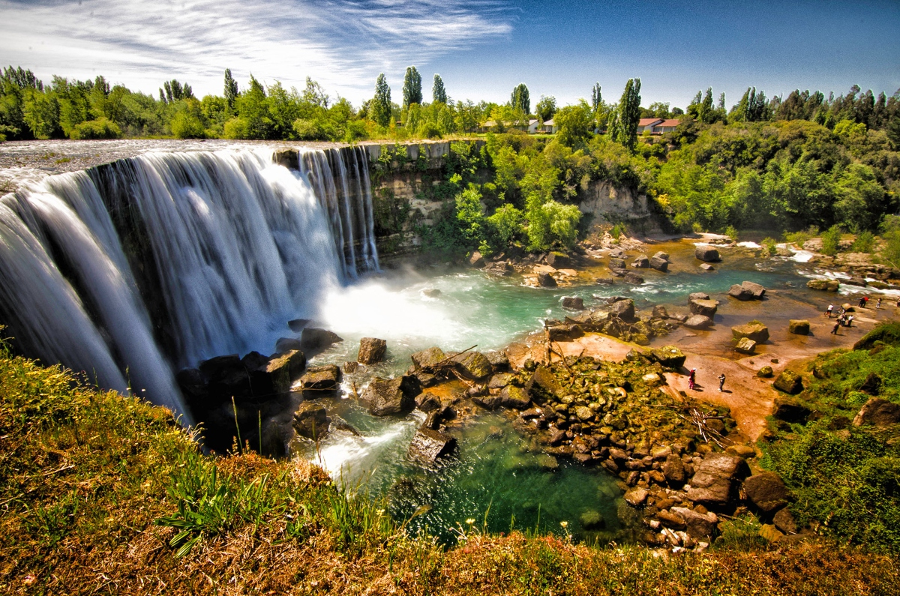
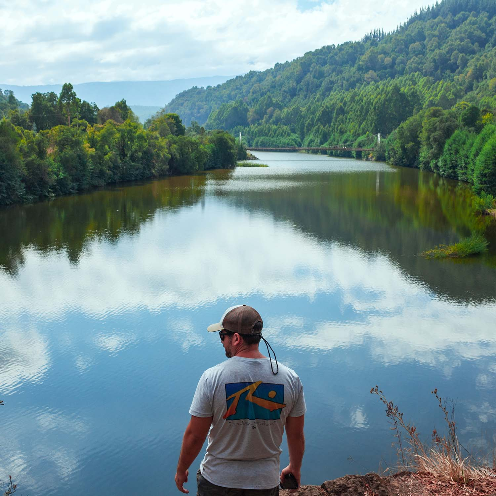
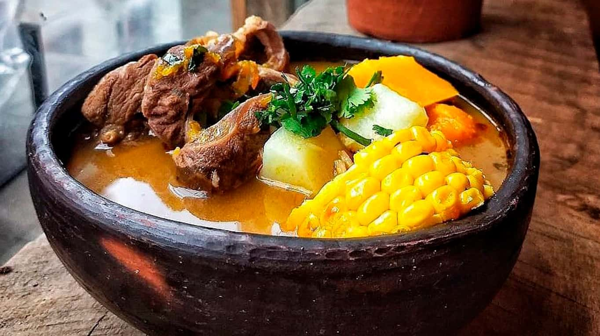
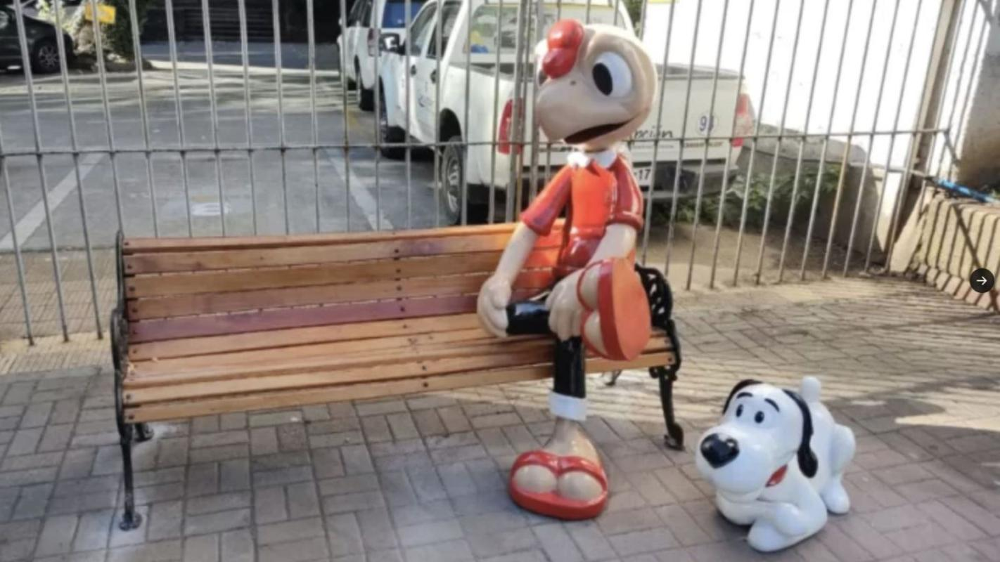
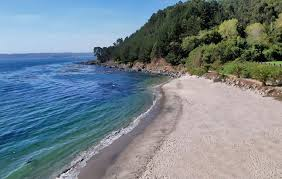

Encuentra cosas que hacer para todo lo que te gusta
Explora más de 40 experiencias y reserva con nosotros
Buscar todo
Hoteles
Cosas que hacer
Restaurantes


Explora más de 40 experiencias y reserva con nosotros

Al Aire Libre

Comida

Cultura

Agua
Tres días no parece mucho, pero en Alto BioBío (una pequeña localidad fácil de caminar con atracciones agrupadas en el centro de la ciudad) es tiempo suficiente. En un fin de semana largo,...